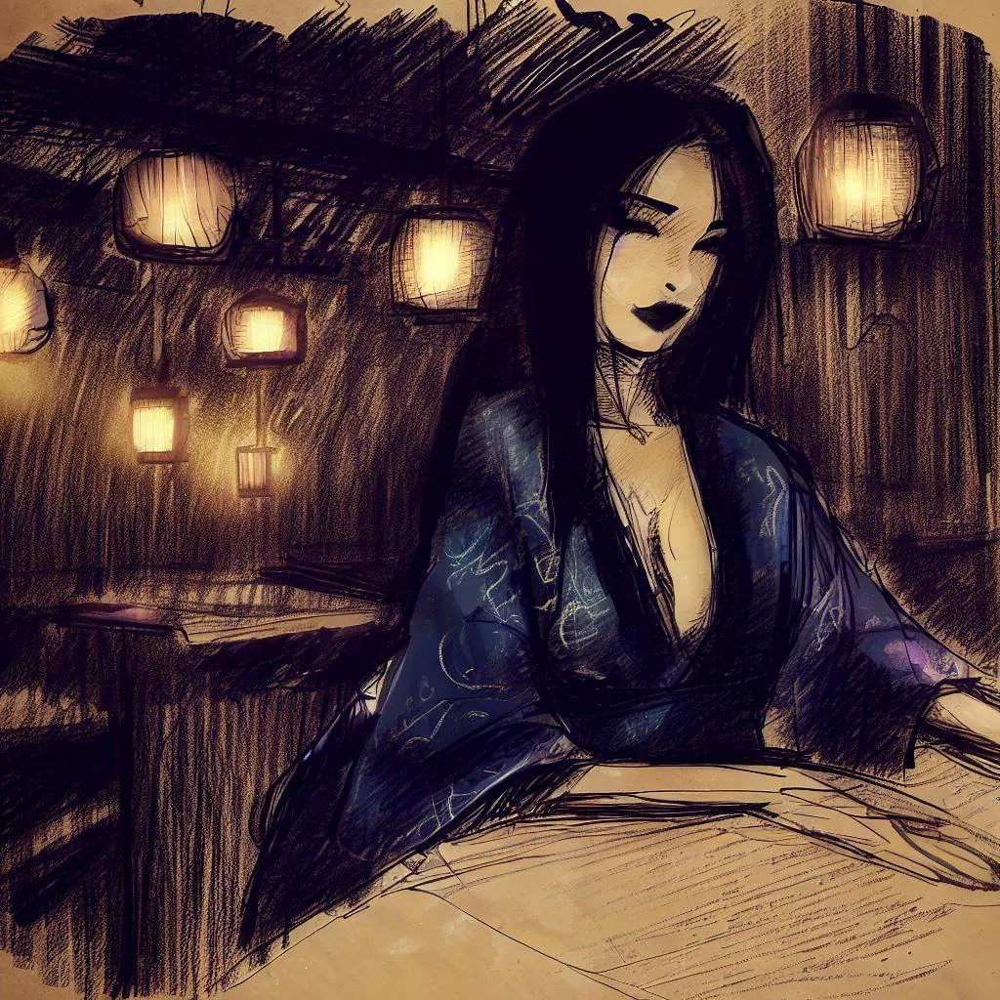
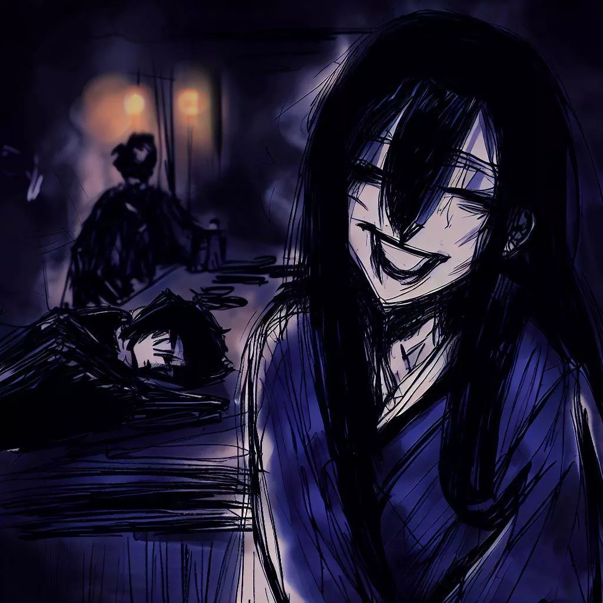

ਕੋਮਾਯੋ: ਓਗੀ ਗੇਮ ਦੀ ਮਿਸਟਿਕ ਗੂੰਜ
ਮੈਂ ਕੋਮਾਯੋ ਨੂੰ ਧੰਨਵਾਦ ਕਹਿਣਾ ਚਾਹੁੰਦਾ ਹਾਂ। ਉਹ ਮੈਨੂੰ ਇੱਕ ਬਹੁਤ ਦਿਲਚਸਪ ਰਣਨੀਤੀ ਵਾਲਾ ਖੇਡ ਸਿਖਾਇਆ। ਮੈਂ ਆਪਣੀਆਂ ਮਿਲਣ ਦੀ ਕਹਾਣੀ ਦੱਸਣਾ ਚਾਹੁੰਦਾ ਹਾਂ। ਇਹ ਮੇਰੀਆਂ ਯਾਦਾਂ ਹਨ ਜੋ ਮੈਨੂੰ ਬਹੁਤ ਪਸੰਦ ਹਨ ਅਤੇ ਮੈਂ ਇਹਨਾਂ ਨੂੰ ਇੱਥੇ ਸਾਂਝਾ ਕਰਨਾ ਚਾਹੁੰਦਾ ਹਾਂ।
ਅਣਜਾਣ ਰਸਤੇ
ਦਿਨ ਦੀ ਰਾਤ ਹੋ ਚੁੱਕੀ ਹੈ ਅਤੇ ਮੈਂ ਅਪਣੀ ਨੌਕਰੀ ਛੱਡ ਕੇ ਚੱਲਦਾ ਹਾਂ। ਮੈਂ ਓਸਾਕਾ ਵਿੱਚ ਹਾਂ ਅਤੇ ਮੈਂ ਤਾਜਾ ਸ਼ਾਮ ਦੀ ਹਵਾ ਸੰਧ ਲੈ ਰਿਹਾ ਹਾਂ। ਸ਼ਹਿਰ ਸੁਨਹਿਰੇ ਅਤੇ ਮੈਨੂੰ ਸ਼ਾਂਤੀ ਮਹਸੂਸ ਹੋ ਰਹੀ ਹੈ।

ਮੈਂ ਗਲੀਆਂ ਵਿੱਚ ਚੱਲਦਾ ਹਾਂ। ਇਮਾਰਤਾਂ ਵੱਡੀਆਂ ਅਤੇ ਚਮਕਦਾਰ ਹਨ। ਰਾਤੀਆਂ ਵਿੱਚ ਉਹ ਬਹੁਤ ਸੁੰਦਰ ਲੱਗਦੀਆਂ ਹਨ।
ਗੇਮ ਬਾਰ
ਮੈਂ ਰੰਗਰੇਜ਼ੀ ਬਾਰ 'ਚ ਪਹੁੰਚਿਆ ਹਾਂ। ਇਹ ਸ਼ਾਂਤ ਸਥਾਨ ਹੈ ਜਿਸ ਵਿੱਚ ਮੁੱਖੀ ਰੌਸ਼ਨੀ ਹੈ। ਇਥੇ ਲੋਕ ਸ਼ੋਗੀ ਖੇਡ ਰਹੇ ਹਨ।
ਮੈਂ ਇੱਕ ਸ਼ੀਸ਼ਾ ਸਾਕੇ ਦੀ ਆਰਡਰ ਕੀਤੀ ਹਾਂ। ਮੈਂ ਘੁੰਮੀਆਂ ਹਾਂ। ਮੈਂ ਲੱਗਦਾ ਹਾਂ ਕਿ ਮੈਂ ਕੁਝ ਦਿਲਚਸਪ ਕਰਨਾ ਚਾਹੁੰਦਾ ਹਾਂ। ਫੇਰ, ਮੈਂਨੂੰ ਇੱਕ ਬਾਰ ਦਿਹਾੜਾ ਪੈਂਦਾ ਹੈ ਕਿ ਰੀਜਨਸੀ ਬਾਰ ਨਾਂ ਦੇ ਇੱਕ ਜਗ੍ਹਾ ਦੀ ਸੀ ਜਿੱਥੇ ਲੋਕ ਸ਼ੋਗੀ ਖੇਡ ਰਹੇ ਹਨ।
ਮੈਂ ਕੁਝ ਸਮੇਂ ਲਈ ਬਾਰ ਵਿੱਚ ਪਹੁੰਚਿਆ ਹਾਂ। ਇਹ ਇੱਕ ਚੁੱਪ ਥਾਂ ਹੈ ਜਿਸ ਵਿੱਚ ਨਰਮ ਰੌਸ਼ਨੀ ਹੈ। ਇੱਥੇ ਲੋਕ ਸ਼ੋਗੀ ਖੇਡ ਰਹੇ ਹਨ।
ਮੈਂਨੂੰ ਹੱਕ ਦੀ ਖੁਸ਼ੀ ਹੋਈ। ਜਦੋਂ ਮੈਂ ਇਸ ਤੇ ਪੁੱਛਿਆ ਕਿ ਉਹ ਮੇਰੇ ਨਾਲ ਸ਼ੋਗੀ ਖੇਡਣ ਲਈ ਚਾਹੁੰਦੀ ਹੈ ਤਾਂ ਉਹ ਹੰਸੀ ਦਿੱਤੀ।

ਇੱਕ ਵੱਖਰਾ ਖੇਡ
ਉਹ ਮੇਰੇ ਪੁੱਛਣ ਤੇ ਹੰਸੀ ਦਿੱਤੀ।
ਉਹ ਇੱਕ ਖੇਡ ਦੇ ਬੋਰਡ ਨੂੰ ਬਾਹਰ ਕਾਗਜ਼ ਵਿੱਚ ਛੁਪਾਇਆ। ਮੈਂ ਹੈਰਾਨ ਹੋਇਆ। ਬੋਰਡ ਨੂੰ ਅਸਲ ਨੂੰ ਛੋਟਾ ਹੀ ਹੈ। ਇਸ ਵਿੱਚ ਸਾਬਤਾਂ ਅਤੇ ਪੀਸਾਂ ਵੱਲ ਗਿਣਤੀ ਕਮ ਹਨ। ਸਾ
ਮਾਨ ਪ੍ਰਤੀ ਖਿਲਾਡੀ ਲਈ ਹੋਰ ਖਾਤੇ ਹਨ। ਨਾਰਮਲ ਸ਼ੋਗੀ ਵਲੋਂ 9x9 ਟਿਕਾਣੇ ਦੀ ਜਗ੍ਹਾ ਇਹ 8x8 ਟਿਕਾਣੇ ਹਨ। ਹਰ ਖਿਲਾਡੀ ਲਈ ਸਿਰਫ 18 ਪੀਸਾਂ ਹਨ। ਇੱਕ ਸਵਾਲ ਪੁੱਛਣ ਤੋਂ ਪਹਿਲਾਂ ਉਸਨੇ ਸਮਝਾਇਆ ਕਿ ਇਹ ਖੇਡ ਓਗੀ ਕਹਾਵਤੀ ਹੈ।

ਉਸਨੇ ਇੱਕ ਵਿਸ਼ੇਸ਼ ਪੀਸ ਬਾਰੇ ਕਿਹਾ। ਉਹ ਰਾਜਕੁਮਾਰੀ ਪੀਸ ਸਾਨੂੰ ਦਿੱਤੀ। ਉਹ ਕਹਿੰਦੀ ਸੀ ਕਿ ਇਹ ਪੀਸ ਖੇਡ ਵਿੱਚ ਵਧੀਆਂ ਗਤੀ ਦਿੰਦੀ ਹੈ। ਜਦੋਂ ਉਹ ਮੇਰੀ ਹੈਰਾਨੀ ਦੇ ਕਾਰਨ ਹੱਸੀ, ਉਹ ਮੁੱਸਹੀ ਕੀਤੀ। ਫਿਰ, ਉਸਨੇ ਬੋਰਡ 'ਤੇ ਪੀਸਾਂ ਰੱਖਣਾ ਸ਼ੁਰੂ ਕਰਦਾ।
ਜਦੋਂ ਉਸਨੇ ਪੀਸਾਂ ਰੱਖੀਆਂ, ਮੈਂਨੂੰ ਕੁਝ ਵੱਖਰੀ ਚੀਜ਼ਾਂ ਦਿੱਖ ਆਈਆਂ। ਬੋ
ਰਡ 'ਤੇ ਕੋਣਿਆਂ ਵੀ ਸਨ। ਉਸਨੇ ਸਮਝਾਇਆ ਕਿ ਇਹ ਕੋਣੇ ਨਰਮਲ ਸ਼ੋਗੀ ਵਲੋਂ ਗੁੰਬਦ ਵੱਲ ਬਦਲ ਦਿੱਤੇ ਗਏ ਹਨ।
ਜਦੋਂ ਸਭ ਪੀਸਾਂ ਬੋਰਡ 'ਤੇ ਰੱਖੀਆਂ ਗਈਆਂ, ਮੈਂ ਬਹੁਤ ਉਤੇਜਨਾ ਨਾਲ ਭਰ ਗਿਆ। ਮੈਨੂੰ ਸੱਚਮੁੱਚ ਇਸ ਨਵੇਂ ਖੇਡ ਨੂੰ ਖੇਡਣ ਦੀ ਬਹੁਤ ਇੱਚਾ ਸੀ। ਅਤੇ ਮੈਂ ਇਸ ਰਹਸਮਈ ਔਰਤ ਬਾਰੇ ਹੋਰ ਜਾਣਨਾ ਚਾਹੁੰਦਾ ਹਾਂ।
ਖੇਡ ਟੈਸਟ
ਘੜੀ ਦੀ ਧਾੜਕਾ ਚੱਲ ਰਹੀ ਹੈ। ਖੇਡ ਦੇ ਬੋਰਡ 'ਤੇ ਪੀਸਾਂ ਦੀ ਹਿੱਲਤੀ ਆਵਾਜ਼ ਹੀ ਚੀਜ਼ਾਂ ਵਜੋਂ ਤੋੜ ਰਹੀ ਹੈ। ਪੀਸ ਨਿਸ਼ਚਿਤ ਵਿਚਾਰ ਨਾਲ ਚਲ ਰਹੀਆਂ ਹਨ। ਰਾਜਕੁਮਾਰੀ ਖੇਡ ਨੂੰ ਲਾਵਾ ਰਹੀ ਹੈ। ਖੇਡ ਦੀ ਚੁੱਪੀ ਕਮਰੇ ਨੂੰ ਭਰ ਰਹੀ ਹੈ। ਇਹ ਬਹੁਤ ਤਾਣਾਂਵਾਂ ਵਾਲਾ ਹੈ।
ਔਰਤ ਬਹੁਤ ਵਧ
ੀਆ ਖੇਡ ਖੇਡਦੀ ਹੈ। ਜਦੋਂ ਉਹ ਮੇਰੀ ਇੱਕ ਪੀਸ ਨੂੰ ਪਕੜਦੀ ਹੈ, ਉਹ ਉਸ ਨੂੰ ਆਪਣੀ ਪੀਸ ਵਜੋਂ ਪੱਛੇ ਵਾਪਸ ਬੋਰਡ 'ਤੇ ਰੱਖ ਸਕਦੀ ਹੈ। ਉਹ ਹਰ ਇਕ ਚਲ ਨੂੰ ਮੇਰੇ ਲਈ ਇੱਕ ਸਬਕ ਬਣਾ ਰਹੀ ਹੈ। ਉਹ ਹਰ ਪੀਸ ਨੂੰ ਬਹੁਤ ਧਿਆਨ ਨਾਲ ਵੇਖਦੀ ਹੈ।
ਮੈਂ ਖੇਡ ਜਾਰੀ ਰੱਖਦਾ ਹਾਂ। ਮੈਂ ਆਪਣੇ ਪੀਸਾਂ ਨੂੰ ਬਹੁਤ ਊਰਜਾ ਨਾਲ ਹਿਲਾਂਦਾ ਹਾਂ। ਮੈਂ ਆਪਣੇ ਰਾਜਾ ਨੂੰ ਸੁਰੱਖਿਆ ਦੇਂਦਾ ਹਾਂ। ਪਰ ਹਰ ਚਲ ਨਾਲ, ਮੈਨੂੰ ਹੋਰ ਥਕ ਜਾਂਦੀ ਹੈ। ਮੇਰੀ ਅੱਖਾਂ ਭਾਰੀ ਹੋ ਰਹੀਆਂ ਹਨ।
ਅੰਤ ਵਿੱਚ, ਮੈਂ ਹੋਸ਼ ਵਿੱਚ ਨਹੀਂ ਰਹ ਸਕਦਾ। ਮੈਨੂੰ ਬਹੁਤ ਥੱਕ ਗਿਆ ਹੈ। ਸਬ ਕੁਝ ਕਾਲਾ ਹੋ ਰਿਹਾ ਹੈ। ਆਖਰੀ ਚੀਜ਼ ਜੋ ਮੈਂ ਦੇਖਿਆ ਹੈ, ਉਹ ਔਰਤ ਦੀ ਹੱਸੀ ਹੈ। ਉਹ ਖ
ੁਸ਼ ਹੈ।

ਇੱਕ ਹੈਰਾਨ ਕਰਨ ਵਾਲੀ ਜਾਗਰੂਕਤਾ
ਮੈਂ ਸੌਣ 'ਚ ਸੋ ਰਿਹਾ ਸੀ, ਅੰਧਕਾਰ ਵਿੱਚ ਖੋਇਆ ਹੋ ਗਿਆ ਸੀ। ਫਿਰ, ਥੋੜੇ ਥੋੜੇ ਵੇਲੇ ਮੈਂ ਜਾਗ ਉਠਿਆ। ਸੋਣ 'ਚ ਮੈਂ ਸਵੇਰ ਹੋ ਗਿਆ। ਮੈਨੂੰ ਅਪਨੀਆਂ ਅੱਖਾਂ ਖੋਲ੍ਹੀਆਂ। ਬਾਰ ਹੁਆਂ ਅਕੇਲਾ ਹੀ ਹੀ ਬਦਲ ਗਿਆ ਸੀ। ਔਰਤ ਨਹੀਂ ਸੀ। ਉਸਦੀ ਅਸਤਿਤਵਾ ਨੂੰ ਛੱਡਿਆ ਗਿਆ ਸੀ। ਬਾਰ ਬਹੁਤ ਚੁੱਪ ਸੀ।
ਮੈਂ ਖੇਡ ਬੋਰਡ ਦੇ ਬਜ਼ਾਰ ਉੱਤੇ ਦੇਖਿਆ ਕਿ ਜਾਂਦੇ ਮੈਲ ਦਾ ਇੱਕ ਕਾਗਜ਼ ਹੈ। ਮੈਨੂੰ ਉਸ ਕਾਗਜ਼ ਨੂੰ ਲਿਆ। ਉੱਤੇ ਇੱਕ ਸ਼ਬਦ ਸੀ: "ਧੰਨਵਾਦ"। ਅਤੇ ਇੱਕ ਨਾਮ ਸੀ: "ਕੋਮਾਯੋ"
। ਇਹ ਨਾਮ ਉਸ ਔਰਤ ਦੀ ਆਖਰੀ ਯਾਦ ਸੀ। ਮੈਨੂੰ ਉਸ ਨਾਲ ਅਜਿਹੀ ਸੁੰਦਰ ਸ਼ਾਮ ਬਿਤਾਈ ਸੀ, ਰੀਜਨਸੀ ਬਾਰ 'ਤੇ ਓਗੀ ਖੇਡ ਖੇਡ ਕੇ।